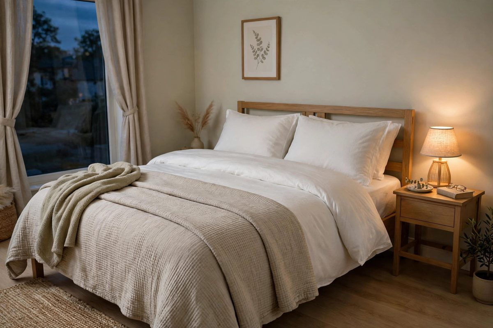
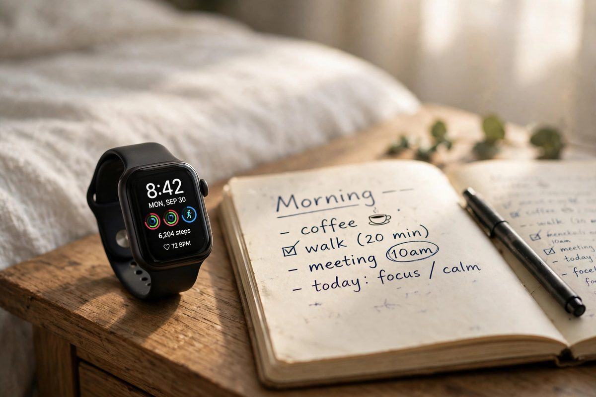

How It Works
Our sleep calculator counts backwards from your wake time in 90-minute sleep cycles, then adds your time to fall asleep. Use the bedtime calculator to find the best time to go to bed, or the wake-up time calculator to find the best alarm for a set bedtime.
The science is simple: waking at the end of a cycle feels far better than waking in the middle of deep sleep. Our guide to sleep cycles explained walks through a night, and how to use the sleep calculator explains the steps. If you need 7.5 or 9 hours, the how much sleep guide explains the 7 to 9 hour range.
For better nights overall, see the sleep hygiene checklist, fixing your sleep schedule, and the power nap guide for a refreshing afternoon nap. And if you work nights, sleep and shift work covers the practical steps that help most.
All Calculators
Find the best bedtime for your wake time, based on 90-minute sleep cycles.Wake-Up Time Calculator
Going to bed at a set time? Find the best alarm times at the end of a sleep cycle.Sleep Cycles Explainer
See how your night is divided into 90-minute cycles of light, deep and dream sleep.Nap Length Calculator
Plan a power nap or a full-cycle nap, with the best time to wake up.
Guides

How to Use a Sleep Calculator
A step-by-step guide to finding your best bedtime from your wake time, using 90-minute sleep cycles.
Sleep Cycles Explained
What happens in each 90-minute sleep cycle, why deep and dream sleep matter, and how cycles change across the night.
The Best Bedtime for an Early Riser
Bedtimes for 5 a.m., 5:30 a.m. and 6 a.m. starts, and how to make early mornings work without feeling exhausted.

Wake-Up Time Calculator: A Guide
How to choose the best alarm time for your bedtime, and why the right alarm time matters more than the hour you go to bed.

How Much Sleep Do Adults Need?
The 7 to 9 hour guideline, why it varies, and how to tell how much sleep you personally need.

Sleep Needs by Age
How much sleep newborns, children, teenagers, adults and older people need, and why the numbers change.

The Power Nap Guide
How to take a 10 to 20 minute nap that refreshes you, when to nap, and the mistakes that leave you groggier.
Fixing Your Sleep Schedule
How to reset a late or irregular sleep schedule, step by step, and keep it fixed.
Sleep and Shift Work
How to sleep well when you work nights, the best times to nap, and how to protect your health on a rotating roster.

Weekend Catch-Up Sleep: Does It Work?
Whether sleeping in at the weekend repays a week of short nights, and what it does to your body clock.

Sleep Hygiene Checklist
The everyday habits that protect sleep: light, temperature, caffeine, screens, and a regular schedule.

Caffeine and Sleep
How caffeine works, how long it lasts, and when to stop drinking it so it does not ruin your night.
Screens Before Bed
How phones and screens affect sleep, what the light and the content each do, and a practical evening screen plan.

Sleep and Exercise
How exercise improves sleep, the best time of day to train, and why late-night workouts can keep you awake.

Napping Mistakes to Avoid
The common errors that turn a refreshing nap into grogginess, night-time insomnia, or a wasted afternoon.
Why You Wake Up Groggy
Sleep inertia explained: why some mornings feel terrible, what causes it, and how to wake up clear.
Sleep Debt Explained
What sleep debt is, how it accumulates, whether you can repay it, and how to stop building it up.
A Bedtime Routine for Adults
How to build a 30 to 60 minute wind-down routine that helps you fall asleep faster and sleep better.

Setting Up Your Sleep Environment
How to make your bedroom dark, cool and quiet, and why the room matters as much as the routine.

Tracking Your Sleep Quality
How to track sleep with a diary, an app or a wearable, what the numbers mean, and when tracking helps or hurts.
Frequently Asked Questions
How does a sleep calculator work?
It counts backwards from your wake time in 90-minute sleep cycles, and adds your time to fall asleep, giving bedtimes that land at the end of a cycle.
How much sleep do adults need?
Most adults need 7 to 9 hours a night, which is 5 or 6 sleep cycles.
Why do I feel groggy after 8 hours?
You probably woke in the middle of deep sleep. Waking at the end of a 90-minute cycle feels much better, even after fewer total hours.
What is a sleep cycle?
About 90 minutes of sleep that moves through light, deep and dream (REM) stages, then repeats. Early cycles have more deep sleep, later ones more dream sleep.
How long should a nap be?
10 to 20 minutes for a power nap, or 90 minutes for a full cycle. Avoid 30 to 60 minutes, which can leave you groggy.
Is my data stored anywhere?
No. The calculation runs in your browser, and nothing you enter is sent or stored.